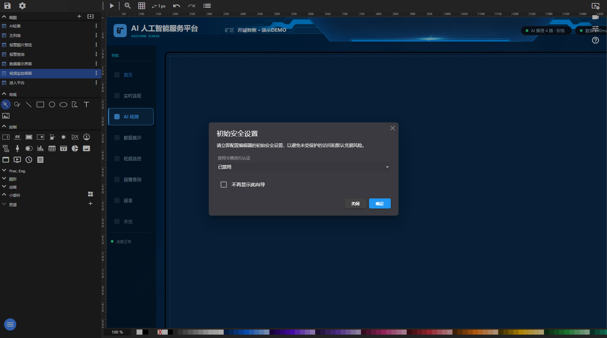

组态编辑器是平台的“画图车间”：拖入控件、绑定设备点位、设置动画与报警，保存后即成为运行画面。所有工程内容都在浏览器里编辑，无需装客户端。

组态编辑器（当前交付版实际截图）
| 区域 | 实际内容 |
|---|---|
| 按钮 / 图标 | 保存项目、编辑项目、视频墙、视频监控、传感器标定、开诚智枢帮助、改变图像、play_arrow、zoom_in、grid_on、swap_horiz1 px、undo、redo、content_copy、content_cut、move_down、move_up、link、format_align_left、format_align_center、format_align_right、vertical_align_top、vertical_align_center、vertical_align_bottom、format_line_spacing、list |
| 表单字段 | id:、class:、Title:、width:、height:、Embed data (local files)、Use file reference、URL:、Snapping on/off、Snapping Step-Size:、Grid color:、Show rulers、不再显示此向导 |